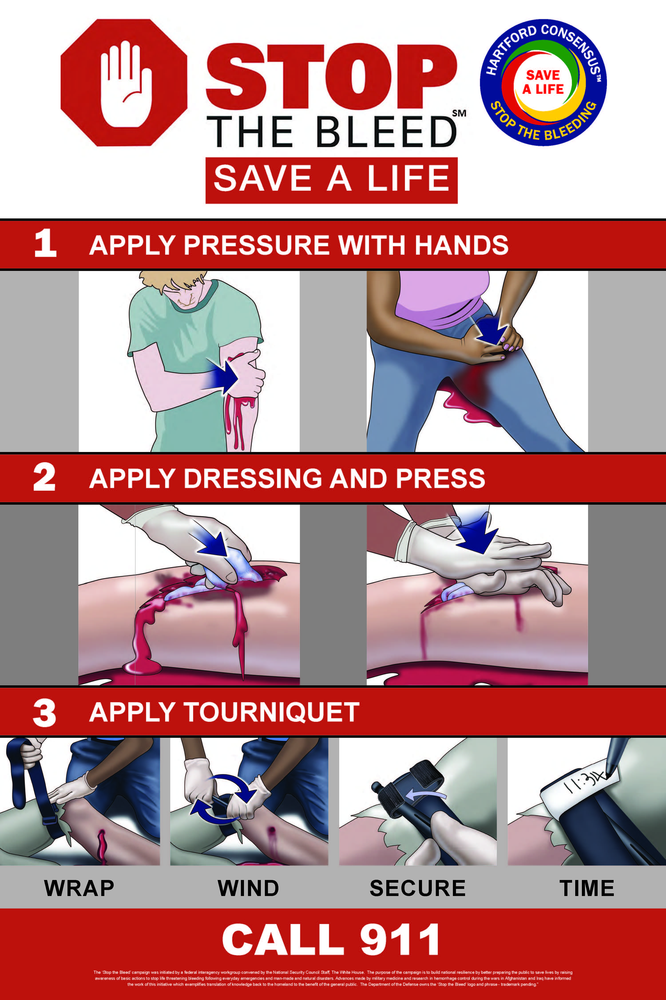

Featured Projects :
1. 🚨Emergency Preparedness Guide
Be ready for anything. Learn how to prepare for disasters.
Select a Disaster
Preparedness Guide
Select a disaster to view the steps.
2. 🩺Basic First Aid Simulator
Click on a scenario and choose the correct action.
Choose a Scenario
🩸 Bleeding
🔥 Burn
🔥 choking
🔥 unconscious
❤️ CPR
Simulation Area
Select a scenario above to begin.
Learn essential tips and techniques to save lives during emergencies. Preparedness starts with you!
Learn how to save lives by preparing for emergencies, applying basic first aid, and knowing what to do in critical situations. Join our community of trained life savers!
Testimonial Sections :
Quote 1: “I took the CPR course, and it’s saved a life in my family! Highly recommended.†– Sarah H.
Quote 2: “The hands-on first aid training helped me gain confidence. I feel better prepared for emergencies.†– Mark J.
Quote 3:“The simulations felt so real. Practicing those steps made me realize how unprepared I was before.†– Jenny R.
Quote 4: “Thanks to the training, I was able to assist a stranger having a seizure. It gave me the courage to act.†– Luis M.
Quote 5: “I used to panic during emergencies. Now I stay calm and focused, all because of this program.†– Anna L.
About Me
Hi, I'm Lara!
A proud senior student responder and a passionate advocate for life-saving education. My personal journey began when I joined the Campus Disaster Risk Reduction Management System Unit (CDRRMSU). At first, I was simply curious but as I trained, participated in real-life emergency simulations, and competed in the Rescue Olympics, something within me changed. I found my purpose. Through these experiences, I learned not only how to save lives, but also how to lead under pressure, work as a team, and stay calm during chaos. CDRRMSU didn’t just teach me skills it shaped my mindset, built my confidence, and awakened a deep desire to serve.
My mission is clear. "To empower every individual no matter their background with the knowledge, courage, and practical tools to take action during emergencies. I believe in:✔️ Preparedness over panic ✔️ Compassion with action ✔️ Learning that saves lives
This website “Be a Lifesaver”is my way of giving back. It’s a platform built from purpose and driven by heart. Whether through education, tech solutions, or community outreach, I aim to make lifesaving skills accessible and inspiring. You don’t need to be a superhero to save a life, just someone who cares enough to learn. Every student, every friend, every bystander we all have the potential to make a difference. Let this space be your starting point. Learn. Be inspired. Take action. One day, you might be the reason someone survives.
My Journey
2024 – Started first aid training | 2025 – UCFR Trained | 2025 – Rescue Olympic Champion
2024 – Started First Aid Training
2025 – UCFR Trained


2025 – Rescue Olympic Champion
You can visit me on my TikTok, and Facebook for more info.
Please follow, like, and share.
THANK YOU AND GOD BLESS
Learn & Train
Learn essential tips and techniques to save lives during emergencies. Preparedness starts with you!
"Benefits of Knowing First Aid :"
*Increased safety: You help prevent minor injuries from becoming major ones.
*Faster recovery: Proper first response reduces long-term damage.
*Confidence in crisis: You stay calm and act smart when others panic.
*Empowerment: You become a valuable asset to your family and community.
"Start Learning Today"
"Don’t wait for an emergency to realize what you could’ve done. Begin with the basics learn how to treat wounds, perform CPR, and manage choking incidents. Being prepared doesn’t just save lives, it changes them.!"
"Be the reason someone survives. Be a life saver.!"
Why Everyone Should Know Basic First Aid ?
"Emergencies don’t wait. Whether you're at home, school, work, or outdoors, accidents and medical emergencies can happen anytime and often when least expected. Knowing basic first aid can turn an ordinary person into a life saver in just minutes."
"The Power of Being Prepared"
First aid is more than just bandages and CPR it's the confidence to act, stay calm, and help until professional assistance arrives. In some cases, quick action can mean the difference between life and death.
"Real-Life Scenarios Where First Aid Makes a Difference"
* Stopping severe bleeding from an accident before it becomes life-threatening.
* Helping someone who’s choking at a restaurant.
* Performing CPR during a cardiac arrest at home or in public.
* Stabilizing a broken bone during a hiking trip.
